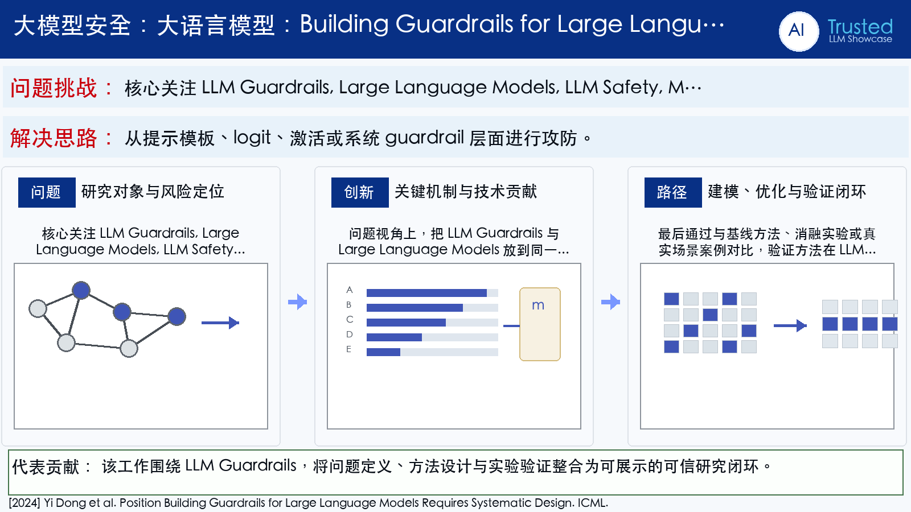

Problem
解决的问题
Guardrails 已成为 LLM 应用的重要安全层，但很多实现依赖规则拼装、单点分类器或经验提示词，难以覆盖复杂上下文、不同用户需求和动态风险。
Research on LLMs and VLMs · 2024 · ICML Position
Building Guardrails for Large Language Models Requires Systematic Design
Problem
Guardrails 已成为 LLM 应用的重要安全层，但很多实现依赖规则拼装、单点分类器或经验提示词，难以覆盖复杂上下文、不同用户需求和动态风险。
Value
这篇立场论文能帮助团队设计 LLM 安全产品架构，避免把 guardrails 当作临时补丁。
ImageGen-style Representative Page
该代表页参考学术汇报信息图风格生成，用统一的深蓝标题栏、问题/思路提示带和三段式方法卡片，总结论文的主要研究问题、创新点与解决思路。
打开原文 PDF
Technical Route
Innovation